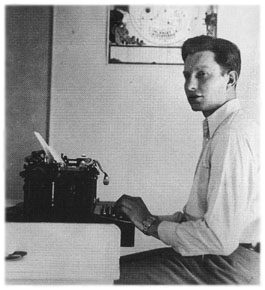
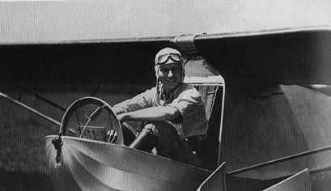

Chapter 3
Explorer Manqué
 'The following years, from 1925 to 1929, saw the young Mr Hubbard, between
the ages of 14 and 18, as a budding and enthusiastic world traveller and
adventurer. His father was sent to the Far East and having the financial
support of his wealthy grandfather, L. Ron Hubbard, spent these years
journeying through Asia . . .
'The following years, from 1925 to 1929, saw the young Mr Hubbard, between
the ages of 14 and 18, as a budding and enthusiastic world traveller and
adventurer. His father was sent to the Far East and having the financial
support of his wealthy grandfather, L. Ron Hubbard, spent these years
journeying through Asia . . .
'With the death of his grandfather, the Hubbard family returned to the United States and [Ron] enrolled at the George Washington University in the fall of 1930. At George Washington L. Ron Hubbard became associate editor of the University newspaper, "The Hatchet", and was a member of many of the University's clubs and societies . . . Here, also, he was enrolled in one of the first nuclear physics courses ever taught in an American university.
'As a student, barely 20 years old, he supported himself by writing and within a very few years he had established himself as an essayist in the literary world . . . He made the time during these same busy college years to act as a director with the Caribbean Motion Picture Expedition of 1931. The underwater films made on that journey provided the Hydrographic Office and the University of Michigan with invaluable data for the furtherance of their research.
'Then in 1932, the true mark of an exceptional explorer was demonstrated. In that year L. Ron Hubbard, aged 21, achieved an ambitious "first". Conducting the West Indies Minerals Survey, he made the first complete mineralogical survey of Puerto Rico. This was pioneer exploration in the great tradition, opening up a predictable, accurate body of data for the benefit of others . . .' (Mission Into Time, published by the Church of Scientology, 1973)
 (Scientology's account of the years 1928-29.)
(Scientology's account of the years 1928-29.)
(Scientology's account of the years 1930-32.)
The USS Henderson arrived off Guam on 25 July 1928 in heavy squalls and lay to on the lee side of the island for five days, waiting for an opportunity to enter the harbour. The weather did not seem to bother Ron. 'That trip was the best I ever took,' he wrote in his journal, 'and the best I ever hope to take. The Navy gave me a
kangaroo court martial, there were nine young grass widows aboard, we danced every other night, the movies were good.'
Ron omitted from his journal any mention of how his parents reacted to his return. After more than a year apart, Harry and May were no doubt happy to see their seventeen-year-old son again, but they could not have been too pleased by his impetuous decision to drop out of High School. Since there was no possibility of getting him back to the United States in time for the start of the senior year - even if he would agree to go - it was decided that he should stay on Guam and be tutored by his mother in preparation for the entrance examination to the Naval Academy.
In spite of the limitations of her teaching experience, May seemed undaunted by the task of bringing her wayward son up to a sufficiently high educational standard to get him through the reputedly tough and highly competitive exam. And with servants padding softly about the house, attending unbidden to every household chore, she had plenty of time to devote to her son's studies.
For his part, Ron could not have been happier to substitute the authoritarian regime of old A.J. Roberts at Helena High for what he considered to be the exotic tropical allure of Guam and the gentle coaching of his mother.
In October, the Hubbards had an opportunity to take a recreational trip to China on the USS Gold Star, the ship that had brought May and Ron to Guam in the summer of 1927. Neither of them had much liked the ship, but the prospect of ten days' sight-seeing in Peking outweighed any reservations they might have had about another voyage. Hub warned his son that he would only be allowed to accompany them on condition that he continued his studies while the ship was at sea. Ron readily agreed.
On 6 October, thirty families reported on board the USS Gold Star for transportation to the China ports and return. Like the other officers on the excursion, Lieutenant Hubbard signed on for 'temporary duty' - he was Assistant to the Supply Officer. As previously, Ron kept a log of the trip, using one of the accounts books that his father could always provide. 'It is a delightful sensation', he scrawled in an early entry, 'to once more experience the pounding of engines below me and to hear the swish of a dark-blue sea outside our port.' At the bottom of the page was a world-weary, elegiac postscript: 'Another boat caught. Is ever thus?'
After a stop in Manila, which he reported as being like 'Guam plus XXX and a few trimmings', they sailed north towards the China coast. Ron was reluctantly confined to a desk in Cabin 9, claiming good progress with his studies.
The Gold Star re-fuelled with coal at Tsingtao, a busy port on the
Shantung Peninsula only recently returned to China after being occupied for some years, first by the Germans, then the Japanese. Ron took the trouble to research Tsingtao's history and concluded that the Chinese, with all their corruption, were unworthy heirs to their own territory inasmuch as they had failed to profit from the efforts of Germany and Japan to clean up their country. 'A Chinaman can not live up to a thing,' he wrote, 'he always drags it down.' On 30 October he noted thankfully: 'We have left Tsingtao forever, I hope.'
On the following day the Gold Star anchored off T'ang-ku, from where its passengers took a train to Peking.[1] Like American tourists the world over, they made sure they got at least a glimpse of all the sights, which Ron described as 'rubberneck stations'. He was decidedly unimpressed by Peking's historical and religious architectural heritage.
The Temple of Heaven, probably the supreme achievement of traditional Chinese architecture, he considered 'very gaudy and more or less crudely done'. The summer palace was 'very cheap as to workman-ship' and the winter palace was 'not much of a palace in my estimation'.
The Lama temple, closed a few days after their visit by the newly-formed National Government, was 'miserably cold and very shabby . . . The people worshipping have voices like bull-frogs and beat a drum and play a brass horn to accompany their singing (?).'
As for the Imperial palaces in the Forbidden City, one was 'very trashy-looking' and most of the others were 'not worth mentioning'. Only the Great Wall of China seemed to fire his imagination and that mostly because it was 'the only work of man's hand visible from Mars'. If China turned it into a 'rolly coaster', he added, 'it could make millions of dollars every year.'
Neither did the Chinese people endear themselves to the opinionated young American. He found them shallow, simple-minded, dishonest, lazy and brutal. 'When it comes to the Yellow Races overrunning the world, you may laugh,' he noted. '. . . [The Chinese] have neither the foresight or endurance to overrun any white country in any way except by intermarriage. One American marine could stand off a great many yellowmen without much effort.'
Even the climate failed to please. Winter lasted from October to May, he said, the cold was intense, and it was so dry that dust formed ankle-deep in the roads and caused 'Peking sore throat', a formidable complaint that endured all winter.
'I believe that the most startling thing one can see in northern China', he wrote, 'is the number of camels. These are of a very mean breed but they resist cold and carry burdens which is all the Chinaman requires of them. Every day in Peking one can see many caravans in
_______________
1. Deck log, USS Gold Star
the streets. They have a very stately shamble. They carry their head high; their mean mouths wagging and their humps lolling from side to side. All my life I have associated camels with Arabs and it strikes a discordant note with me to see the beasts shepherded by Chinamen.'
The Gold Star stopped at Shanghai and Hong Kong before heading back to Guam, but Ron tired of further descriptive writing, apart from taking a final swipe at the luckless Chinese race. 'They smell', he concluded, 'of all the baths they didn't take. The trouble with China is, there are too many chinks here.'
On the final leg of the voyage, Ron's devotion to his studies rather appeared to falter, for he began filling his journal with one-paragraph synopses of short stories that he had either written, or perhaps intended to write, for magazines like True Confession and Adventure.
| Hubbard later claimed to have spent this period 'studying music' and 'composing operettas'. -- Chris Owen |
Predictably, the Orient was his favourite setting and the hero was invariably a white adventurer, as in 'Secret Service': 'Adventure. All in a day's work. Casual laddie in Hankow. Saves town. Joins Brit SS to carry out such orders as "Giovinni in Mukden exciting Communists. Use your own judgement. C13".'
None of his efforts, it must be said, were startlingly original: 'Love story. Goes to France. Meets swell broad in Marseilles. She takes him to her sink, bedroom and bath where he lives until notable citoyens object. He stands them off and takes the next boat for America having received a long expected will donation.'
On page 119 of the accounts book, Ron settled down to write a complete, though untitled, story which began: 'A lazy sun peeped over the horizon to throw glittering streamers of light across the breakers on the surf. The laggoon [sic] lay blue and cool. Tropical birds winged about their daily business and two figures lay stretched on the white coral sand. Two ragged figures, several feet apart . . .'
Ron's grasp of English grammar was as uncertain as his spelling. It transpired that these two figures, a boy and a girl, were the sole survivors of a shipwreck. The girl roused the boy in traditional fashion ('Bob! Bob! Speak to me!'), whereupon Bob spoke thus: '"Their [sic] gone, all gone, they're dead and the ship is at the bottom."'
Alone on a desert island paradise, nature takes its course and they swear undying, though entirely chaste, love. But after being rescued and returning to the United States they drift apart. The story -
interrupted on page 123 by the scribbled working of some hated algebra equations - ends with a poignant reunion in a San Francisco hotel lobby during which the couple laugh at their earlier foolishness.
Although Ron's narrative writing was still immature, he demonstrated an obvious talent in the craft of short-story writing, structuring the narrative skilfully and compensating for what he lacked in literary skill by sheer productivity.
|
 |
| The budding science-fiction writer poses at his typewriter during a visit to his parents on the island of Guam in 1928. |
Like all writers, there were some days when it just would not come right:
'The sun was hot, the day was still, the palm trees gaudy green, lined the beach of that tropical isle . . .
'The sun was hot, the day was still and Hospital Corpsman James Thorpe surveyed his tiny domain . . .
'The sun was hot, the day was still . . .
'The sun was hot and except for the monotonous drone of the sea beating the cruel reef the day was still . . .'
At the age of eighteen, Ron was a pink-faced, lanky youth with a cowlick of red hair and a spotty complexion, but he was writing as if he was a well-travelled man of the world, a carefree, two-fisted, knockabout adventurer with a zest for life. It was an image he was able to create by using the slender experience of his brief travels in the East to provide a gloss of verisimilitude on the overheated combustion of his imagination.
In this way, he felt able to philosophize about 'the untrustworthy, lying, cruel, changeable, satirical Lady Luck', as if he had suffered more than once from her capriciousness: 'This humorist of humorists, this demon of demons has dragged men from their places in the sun into the slime of oblivion; has made beggars kings; has, with a whisper, made and crushed thousands; has laughed at the beings who supposed they ruled our destinies; and has killed enough men to patch hell's highway its blistering length.'
Only when dealing, gingerly, with the opposite sex did the pubescent man of the world lose his assurance. The story that began so tortuously with 'The sun is hot . . .' was about a male nurse in the Navy who fell for his native assistant. 'She took the chair with a sly glance at the boy and folded her slim brown hands in her lap. The
Corpsman was suddenly aware that she was beautiful. He swam for a moment in the depths of her clear brown eyes and then seated himself quickly upon the grass. He was somewhat startled by his discovery and told himself fiercely that she was native, native, native.'
When, inevitably, they fell into each other's arms ('Dimly he saw Marie on the porch and in a moment he felt her in his arms . . .') Ron seemed unsure how to proceed with the story. He scored through the next four lines so heavily as to make them illegible, then abandoned it.
As his attention was so diverted by his fantastic excursions into his imagination, it was perhaps no surprise that Ron failed the entrance examination to the Naval Academy at Annapolis. Mathematics, which he detested, let him down.[2] His father was disappointed but still convinced that Ron could get through the examination. Lieutenant Hubbard's tour of duty in Guam was soon coming to an end and he knew that his next posting would be to Washington DC, where he was to be Disbursing Officer at the Naval Hospital. He discovered that Swavely Preparatory School in Manassas, Virginia - which was within the Washington DC metropolitan area - ran a special course for Annapolis candidates and after a lengthy exchange of telegrams between Guam and Manassas, he managed to enrol Ron for the 1929-30 school year.
The Hubbards returned to the United States at the end of August 1929 and went straight to Helena, Montana, for a happy family reunion. (Their return was not prompted by the death of Ron's 'wealthy grandfather', as suggested in 'official' biographies, since Lafayette Waterbury was still very much alive. He died, aged sixty-seven, on 18 August 1931.) May, who had sometimes found the tropical climate in Guam exhausting, was particularly pleased to be home, filling her lungs with the sweet mountain air of Montana, and she decided to stay on for a while when the time came for Hub to take Ron to Washington.
On 30 September Ron started back at school in the leafy environs of Manassas. In Helena, May sat down to write her son a loving, but gently chiding, letter on the family's rickety typewriter:
Dearest Ronald,Am thinking a lot about this, your first day at school. Do hope you like it and that you study every lesson thoroughly. Remember you are paying for the information and so do not hesitate to ask a teacher again and again about anything that is not clear. I want you to hold to just this one job - getting through school and passing examinations at the top. Don't write anything outside your school stuff. Don't read anything outside of school requirements. When you are through with lessons, get outdoors for your health. If you stick to this rule you will win through.
_______________
2. L. R. Hubbard Service Record Book, US Marine Corps
I am feeling worlds better in this mountain air. It is a wonderful change from the tropics. It is too bad that dad could not also have had it instead of going so early on the job. He did it for yon so when you feel like slacking, I want you to remember dad gave up his hard earned leave to put you where you are. There is only one way you can pay dad and that is by making good. Your success is our biggest goal in life . . .May went on to tell her son about the weather, a two-day fishing trip and the trout she had caught, and Toilie being mad because he had not written her any letters. He was to let her know if he wanted his hiking boots. 'I am on my toes to hear all about your school . . .' she concluded. 'With love and best wishes. Mother.'
Lieutenant Hubbard's heartfelt hope that his son would follow him into the US Navy through the Naval Academy was soon to be dashed. During his first semester at Swavely, Ron went to a doctor complaining of eye-strain and was sent to the Naval Hospital for tests. These revealed him to be so short-sighted that he stood no chance of passing the medical requirements for entry to Annapolis. May, meanwhile, had arrived from Helena and moved into a small house in Oakcrest, Virginia, which Hub had rented for them. Many evenings she would sit with her husband fretting about Ron: Hub's gloom about what the future held for his son was greatly exacerbated by the Wall Street Crash, which seemed as if it would engulf the country in catastrophe.
Ron himself exhibited little regret that a career in the Navy was no longer an option. At Swavely he was made an associate editor of the school's monthly newspaper, the Swavely Sentinel, and he was also busy rehearsing for his part as Anatol in Episode, a one-act comedy which was to launch the Swavely Players' season on 13 December. In truth, being an editor or an actor was a sight more alluring to him than being in the Navy, although he would never have admitted it to his father.
While Ron was happily immersed in school life at Swavely, his father was in frequent contact with the Registrar at George Washington University to try and find a way of getting his son accepted as an undergraduate. Lieutenant Hubbard was advised that if Ron could earn sufficient credits at a recognized school - Woodward School for Boys, a YMCA 'crammer' in Washington DC, was mentioned - he would not be required to sit the College Entrance Examination for the university.
Accordingly, Ron was enrolled at Woodward in February 1930. At the beginning of May he took time off from his studies to enlist as a Private in the US Marine Corps Reserve, adding two years to his age and giving his occupation, for some reason, as 'photographer'. It seems he was unconcerned by such piffling mendacity, even on official
documents, for his bold signature appears at the bottom of his Service Record, confirming both the errors and his physical description height 5'10½", weight 165lb, eyes grey, hair red, complexion ruddy. Six weeks later he was inexplicably promoted to First Sergeant, a leap in rank that was astonishing even by his own standards of self-regard.[3]
Ron's lack of concern for literal truth was exemplified by the persistence with which he claimed he had once been the youngest eagle scout. Even when he won the Woodward school finals in the National Oratorical Contest, with a speech on 'The Constitution; a Guarantee of the Liberty of the Individual', the school newspaper did not fail to mention that he was 'at one time the youngest eagle scout in America', although it was not immediately apparent what this had to do with oratory.[4]
To the intense pleasure of his parents, Ron graduated in June. In a letter to another university (Lieutenant Hubbard was clearly determined to keep his son's options open), his father wrote proudly: 'Ronald worked day and night to prepare for the several examinations and was successful in passing all of them. In my own opinion he has covered considerably more ground than is usual in any high school course and the fact that with all the handicaps he has encountered he has succeeded, he is therefore the best possible subject for university and college work.'[5]
On 24 September 1930, Ron was admitted as a freshman to the School of Engineering at George Washington University, with a major in civil engineering - a discipline suggested by his father. He was photographed for The Cherry Tree, the university year book, standing in the back row of the student chapter of the American Society of Civil Engineers in a smart suit and spotted tie, staring solemnly at the camera, hair smarmed back and instantly identifiable by his curiously protuberant lips, which often gave him an unfortunately sullen demeanour.
The GW Campus, in the heart of Washington DC, was a lively place to be at the start of the 'thirties, despite Prohibition and the worst depression in American history. Even though the newspapers were full of stories about children scavenging for food in garbage cans and pictures of gaunt faces waiting in bread lines, civil engineering students seemed to face a bright future, for people were already beginning to talk about the new era of technocracy, the absolute domination of technology, and the 'Great Engineer' - Herbert Hoover - occupied the White House, just a few blocks from the campus. In New York, the Empire State Building, the tallest building in the world, was nearing completion, testimony to the vision, brilliance and the bright prospects of American civil engineers.
_______________
3. Ibid.
4. Unidentified newspaper clipping
5. Letter from H. R. Hubbard to South Eastern University, 1930
Unhappily, it was a future Ron viewed with some jaundice, for his heart was not in engineering and he had no time for worthy folk like civil engineers. While lecturers droned on about the theory of structure and stress analysis, Ron's imagination roamed the world of the adventure comic strips which were just then beginning to make an impact on American mass culture. His lusty fantasies were still peopled by spies and commissars, pirates and warlords, English soldiers of fortune with impeccable credentials and the stiffest of upper lips pitted against Chinamen of barely credible inscrutability.
His mother's advice - 'don't write anything outside your school stuff' - was quickly forgotten as he covered page after page of his notebooks with swashbuckling yarns, usually set in the Orient and always scribbled in obvious haste as if he could never wait to arrive at the dénouement. His literary interests naturally attracted him to the staff of the university's weekly newspaper, the Hatchet, but while Ron considered himself well enough qualified to be an editor, all he was offered was the job of reporter, which lowly position he only managed to endure for a few months in the spring of 1931.
|
 |
| Hubbard learned to fly a glider while at George Washington University. He acquired the uniquely appropriate nickname of 'Flash' and liked to be described as a 'daredevil speed pilot and parachute artist'. |
However, he had become much enamoured of late with the infant sport of gliding and the idea of learning to fly and he was able to use his influence at the newspaper to stimulate interest in the formation of a university gliding club. On 1 April 1931, the Hatchet reported that an initial meeting of the George Washington University Gliding Club was to he held soon. The club had secured the use of a Berliner primary trainer and plans were being made to buy a power glider to train students for power flight. Anyone interested, the report concluded, should contact L. Ron Hubbard at the Hatchet office.
Thereafter, Ron made sure that the activities of the gliding club were extensively covered. On 15 April it was reported that 'several GW men who are well versed in the science of aviation and motorless flight' were expected to attend an initial meeting the following day. 22 April: 'Glider Club Begins Training at Congressional Airport.' 13 May: 'Members of Glider Club Try Out Theories In Air.'
Ron adored gliding and spent a great deal of time hanging around at Congressional Airport in Rockville, Maryland, hoping to cadge an extra flight and a tow in the Old Ford that pulled the gliders into the air. He never hesitated to cut classes if it meant 'going up' and he relied on his fellow students to brief him on the content of the classes he missed. It was not an ideal way to qualify as a civil engineer.
Although Ron was elected president of the gliding club, it rather appeared from the reports in the Hatchet that he was in danger of being overshadowed by his vice-president, one Ray A. Heimburger. The 13 May story noted, for example, that Heimburger was the first member to release his tow-line in the air, at the height of forty feet,
while Ron was still 'trying his hand at the art of making turns in the air'. Einstein's theories were a 'pipe', Ron was quoted as saying, 'compared to the navigation of a motorless ship'. A few weeks later, Heimburger won second place in a spot landing contest at the Curtis Wright Air Show in Baltimore; another GW student took third place, but Ron did not merit a mention.
If there was any jealousy between the president and his deputy, it was forgotten on 13 July when they both passed their tests at Congressional Airport. Ron was rated 85 - average - by the examiner and was awarded Commercial Glider Pilot Licence No 385.[6] By then he had completed 116 flights - evidence of the amount of time he had devoted to the sport in the two months since the gliding club began training.
It was hardly surprising that Ron's success as a glider pilot was not matched by academic achievement and his grades at the end of the second semester were disappointing. He got an A for physical education, B for English, C for mechanical engineering, D for general chemistry and Fs for German and calculus. His overall grade for the year was D average, a result which gave no pleasure at all to his parents. They were convinced that he could do better.
After a stern warning from his father that he would be expected to show a big improvement in his second year, Ron left Washington to spend the summer vacation at Port Huron, Michigan, where he had arranged to help a friend, Philip Browning, run a gliding school. While he was there, Browning taught him to fly a small stunt plane, although Ron never held a licence for powered flight.[7]
Ron was still in Port Huron when he learned in August that his beloved grandfather had died. The entire family gathered in Helena for the funeral - all six Waterbury 'girls' (Hope had died in childbirth in 1928) were there with their husbands and children and Ray came from Canada with his wife. Lafe was buried at Forestvale Cemetery, a quiet patch of prairie mid-way between the town and the mountains. Immediately after the funeral, Ron returned to Washington to report for two weeks' annual training with the 20th Marine Corps Reserve and was rated 'excellent' for military efficiency, obedience and sobriety.[8]
On the morning of Sunday 13 September 1931, the good people of Gratis, Ohio, a small farming community in Preble County, were surprised to see a small biplane swoop out of the sky and land on a field to the east of the town. The pilots, according to an awed report in the Preble County News, were Philip Browning and 'L. Ron "Flash" Hubbard, dare-devil speed pilot and parachute artist'.
The newspaper reported that the two flyers were forced down after running short of fuel. George Swisher, on whose farm they landed,
_______________
6. Certified airman's file, Federal Aviation Administration, 12 May 1986
7. Ibid.
8. L. R. Hubbard Service Record Book, US Marine Corps
must have been a phlegmatic sort of chap, because it was averred that his first words were: 'Anything I can do for you boys?' After the 'dare-devil speed pilot and parachute artist' had explained the problem, an obliging local by the name of Raymond Boomershine volunteered to run into town to get them some gas.
'Meanwhile,' Ron would recall, 'a lot of people were arriving. They wanted to know if we needed any help. And we said the plane had to be turned around and although they were all in their Sunday best they grabbed the tail and turned her around. Then Raymond Boomershine came back with the gas and helped us fill the tank. We tried to pay him and he said "Nope" and my pal said, "We don't know how to thank you." And Raymond said, "Well, if you put it that way, I always wanted to ride in one of them things. How about a short hop?" That started it. Everyone and his kids got a ride.'[9]
According to the Preble County News, a total of thirty-six 'daring souls' were given a joy-ride that Sunday, by which time it was too dark for the fliers to leave. They stayed the night with Mr and Mrs Luther Kiracofe and next day 'roared on to St Louis, headed for more adventures'.
On the same day Ron was roaring to St Louis, he was also placed on 'scholastic probation' at George Washington University because of his poor grades. When he eventually returned to Washington he appeared unabashed by this stricture, for he continued to devote much of his energy to the gliding club in the hope of raising sufficient funds to purchase a soaring plane.
A few years later Ron would provide, in his usual jaunty prose, a picturesque description of how he had become disillusioned with civil engineering: 'I have some very poor grade sheets which show that I studied to be a civil engineer in college. Civil engineering seemed very handsome at the time. I met the lads in their Stetsons from Crabtown to Timbuctu and they seemed to lead a very colorful existence squinting into their transits. However, too late, I was sent up to Maine by the Geological Society to find the lost Canadian Border. Much bitten by seven kinds of insects, gummed by the muck of swamps, fed on johnny cake and tarheel, I saw instantly that a civil engineer had to stay far too long in far too few places and so I rapidly forgot my calculus and slip stick . . .'[10]
At the end of the next semester, Ron's grades showed no improvement and he remained on probation. He was nevertheless elected a member of Phi Theta XI, the Professional Engineering Fraternity, and was photographed for the year book in formal evening dress, black tie and starched wing collar, as if grimly intent, like his fraternity fellows, on pursuing a career building bridges. On the evening of 8 January 1932, Ron could be found among the
_______________
9. Preble County News, 21 July 1983, (reprint of original article)
10. Adventure, 1 October 1935
eight hundred revellers at the first Engineering Ball, held in the west ballroom at the Shoreham Hotel in Washington. Music for dancing was provided by Red Anderson and his orchestra - 'Mood Indigo', 'Goodnight Sweetheart', 'Minnie the Moocher' and 'When the Moon comes over the Mountain' were the popular songs of the day - and the cabaret featured The Troubadours, under the directions of one Trimble Sawtelle. The Hatchet listed Ron as one of the members of the organizing committee and declared the event to be a 'pronounced' success.
A more important event for Ron that month was the publication of his first article in a magazine. 'Tailwind Willies', in the Sportsman Pilot, described his adventures flying across country in the Midwest with his friend Philip 'Flip' Browning. 'We had three weeks' excess time before we had to get back to the college grind,' he wrote. 'Our resources were one Arrow Sport biplane, two toothbrushes and four itchy feet . . . We carefully wrapped our "baggage", threw the fire extinguisher out to save half a horsepower, patched a hole in the upper wing and started off to skim over four or five states with the wind as our only compass . . .'
The forced landing at Gratis was not apparently considered worthy of mention, perhaps because there appeared to be no shortage of spectacular, not to say unlikely, incidents. At Newport, Indiana, for example, they stopped to take on gas but got stuck in a muddy field. 'I crawled out to let Flip take a whirl at it alone. By using up half the field he managed to wish the muddy Sparrow into her element, and after building some altitude, wheeled over to the place where I stood and called down that there was another field a short distance away. After pacifying a sheriff, who was about to lock me up for trespassing, by shoving him into a mud puddle, I hopped onto the running board of a Purdue Boy's car and burned road over to Flip's new landing place - if you could call it that. The second field was little better than the first and three attempts were necessary before we willed the Sparrow up just in time to see a nine-foot telephone wire at the height of our prop. Flip threw the nose down and the wires were a scant foot above my head . . .'
Any hope of Ron knuckling down to his studies disappeared early in 1932 when the Hatchet announced its intention to publish a monthly Literary Review. Nothing could have suited him better, for it provided him with a further excuse to neglect his tedious engineering books while he wrote more short stories, and sifted through the hundreds he had already written, to find something suitable for publication.
It was unthinkable, out of the question as far as Ron was concerned, for the Literary Review to appear without a contribution from L. Ron
Hubbard and the first issue, published on 9 February 1932, carried a short story eponymously titled 'Tah', about a twelve-year-old boy soldier in China on a route march to a gory death at the point of a bayonet. It was clearly a successful debut, for the third issue included 'Grounded', another bloodthirsty Hubbard story, this one a description of a naval engagement on the Yangtze river, swirling with headless corpses, in which the Commanding Officer of HMS Spitfire meets a sticky end.
In May, Ron won the Literary Review's drama contest with a one-act play, The God Smiles. Set in a café in Tsingtao in Communist China, the plot hovered uncertainly between Chekhov and farce and involved a White Russian officer and his lover hiding behind a curtain to escape arrest by a tyrannical warlord.
Ron was pleased to have his work acknowledged, but he was by then immersed in a new and consuming project that would temporarily take precedence over all his other interests - even gliding. He was making plans to lead an 'expedition' to the Caribbean.
Other, less bombastic, students might have been inclined to describe the venture as a 'summer cruise', but that was not Ron's way. No, it was to be nothing short of a fully-fledged expedition and he was to be its leader. He had already decided on a suitably grandiose title - the Caribbean Motion Picture Expedition. Its dubious scientific aim was to explore and film the pirate 'strongholds and bivouacs of the Spanish main' and to 'collect whatever one collects for exhibits in museums'.[11]
The background to the 'expedition' was that Ron and his friend Ray Heimburger had discovered a big old four-masted schooner, the Doris Hamlin, berthed in Baltimore and available for charter through the summer. Two hundred feet long and 1061 gross tons, she had never been fitted with engines and was thus not exactly overwhelmed with business. Ron had a long talk with the skipper, Captain Fred Garfield, and reckoned that if he could get together about fifty other students they could afford to charter the Doris Hamlin for the whole of the summer vacation. After all, he reasoned, with unemployment in the Unites States topping thirteen million, no one could entertain much hope of finding a vacation job. It did not take him long to find enough volunteers to join him - a tribute to his enthusiasm, organizational ability and salesmanship.
The first report of the forthcoming expedition in the Hatchet, on 24 May 1932, was not by-lined but bore all the hallmarks of L. Ron Hubbard's florid literary style. 'Contrary to popular belief,' it began, 'windjammer days are not over and romance refuses to die the death - at least for fifty young gentleman rovers who will set sail on the
_______________
11. The Hatchet, 24 May 1932
schooner Doris Hamlin from Baltimore on 20 June for the pirate haunts of the Spanish Main . . .
'According to L. Ron Hubbard, the strongholds and bivouacs of the Spanish Main have lain neglected and forgotten for centuries and there has never been a concerted attempt to tear apart the jungles to find the castles of Teach, Morgan, Bonnet, Bluebeard, Kidd, Sharp . . . Down there where the sun is whipping up heat waves from the palms, this crew of gentleman rovers will re-enact the scenes which struck terror to the hearts of the world only a few hundred years ago - with the difference that this time it will be for the benefit of the fun and the flickering ribbon of celluloid. In their spare time, if they have any, they will scale the heights of belching volcanoes, hunt in the thick jungles, shoot flying fish on the wing . . .'
Apart from exploring and 're-enacting' pirate scenes (a perhaps questionable contribution to science), the 'gentlemen rovers' also planned to collect valuable botanical specimens, write articles for travel magazines and make a number of short movies. 'Scenarios will be written on the spot in accordance with the legends of the particular island and after a thorough research through the ship's library, which is to include many authoritative books on pirates.'
The itinerary was similarly crowded - during the one hundred-day cruise it was planned to stop at sixteen ports on the islands of Martinique, Dominica, Guadeloupe, Nevis, Montserrat, St Croix, Vieques, Puerto Rico, Haiti, Jamaica, Gonave, Tortue and the Bahamas. More experienced expedition leaders might have paused to ponder the feasibility of attempting to sail five thousand miles in one hundred days in an old four-master with no auxiliary power, but Ron was able to draw on all the overweening confidence of his twenty-one years and would not consider anything remotely less ambitious.
The expedition certainly appeared to have impressive backing. There were reports that the University of Michigan was providing technical support, the Carnegie Institute and the Metropolitan Museum were somehow involved, a sea-plane had been shipped on board to take aerial pictures, Fox Movietone and Pathé News were competing for film rights and The New York Times had contracted to buy still photographs. Members of the expedition, it was said, would be sharing the profits from these various lucrative deals.
It seemed that young Ron Hubbard had pulled off quite a coup and it was in the spirit of the greatest possible optimism that the Doris Hamlin set sail from Baltimore on 23 June, only a few days behind schedule. As the schooner slipped her moorings, spread her four great sails and leaned into Chesapeake Bay, every man on board believed he was on the threshold of a great adventure. Ron, standing in the bows with the wind ruffling his red hair, was grinning as broadly as the rest,
even though ten of the 'gentleman rovers' had entertained last-minute second thoughts and pulled out, leaving the expedition in what he would later ominously describe as a 'delicate financial situation'.
In Washington, nothing was heard of the expedition until 5 August, when the Hatchet reported that the schooner had arrived, 'with everything ship-shape', at Bermuda on 6 July. The story quoted a letter, presumably from Ron, explaining some of the expedition's early difficulties: 'We had one H--- of a time getting out of the Chesapeake Bay with the wind blowing in like the very devil. After that we had a couple of days of calm. Then a stiff breeze came along and we keeled over and ran before it nicely. But next it blew into a storm and for two days we were tossed and rolled about enough to make nearly everyone sick. After that we got a break and the last three days our bowsprit has been cutting through the brine at eight or nine knots.'
What was not explained was why, two weeks after leaving Baltimore, the Doris Hamlin was in Bermuda, six hundred miles out in the Atlantic and almost as far from Martinique, her planned first port of call, as Baltimore. It was a question that could not be answered until early in September when the Doris Hamlin sailed back into Chesapeake Bay three weeks before her expected return. In Baltimore, Captain Garfield, a man of few words but with thirty years' sailing experience, sourly declared the voyage 'the worst trip I ever made'.
Even Ron, who did his best to put a brave face on it, could barely conceal the fact that the Caribbean Motion Picture Expedition had been a disaster. From the start, nothing had gone right: after leaving the east coast of the United States, storms had driven the schooner far off course and Captain Garfield had told Ron they would have to put into Bermuda to replenish the fresh water tanks, which had sprung a leak. Ron, who knew there was barely enough money in the kitty to cover expenses, ordered the Captain to stand off the island to try and avoid harbour charges. Garfield refused. A heated argument followed but the veteran skipper was not of a mind to take orders from a twenty-one-year-old and sailed his ship into Bermuda harbour.
At this first landfall, eleven members of the expedition promptly announced they had had enough adventure and intended to go home. They had been disgusted, Ron explained, by the 'somewhat turbulent seas'. It transpired that the ship's cook also suffered from seasickness and so Ron fired him and hired two Bermudans to take his place. By the time he had paid off the cook and settled the bills for fresh water supplies, mooring and pilotage, the Caribbean Motion Picture Expedition was in danger of running out of money before it even arrived in the Caribbean.
Two days out from Bermuda, bound for Martinique, Ron discovered that all the fresh water which had been taken on board had
leaked away and his relationship with the Captain became even more acrimonious. It took the Doris Hamlin seventeen days to reach Martinique, where she arrived a month to the day after leaving Baltimore.
As soon as the anchor splashed into the blue water of the bay at Fort de France, once notorious for yellow fever, several more 'gentleman rovers' abandoned ship and made their own way home, disinterested in further roving with Ron. After they had gone ashore, Ron decided on a showdown with the increasingly surly Captain Garfield. As a result of the fresh water débâcle, he said, he would not be handing over any more money to the Captain. Garfield stomped off, muttering dark threats.
News of this development instantly reached the ears of the six-man crew, whom Ron had earlier affectionately described as 'old sea dogs'. Faced with a threat to their wages, they instantly turned rabid and demanded Ron pay them in full, in advance. The leader of the rapidly disintegrating expedition tried to placate them and promised to cable home for more money.
Meanwhile, Captain Garfield was sending his own cable home - to the owners of the Doris Hamlin, warning them that the charter fees were at risk. Their response was immediate and unequivocal. Garfield was ordered to sail the ship straight back to Baltimore. Ron pleaded for more time, swore there was no shortage of money, threatened dire retribution in the courts, appealed to the Captain's better nature - all to no avail. In desperation, he went ashore to seek advice from the US Consul in Fort de France, but was told there was nothing that could be done.
The Doris Hamlin weighed anchor and set a course for home with not a single pirate haunt explored. The 'gentlemen rovers' could do no more than stare moodily from the schooner's rails as the islands they hoped to visit passed by on the horizon and dropped astern. 'When we left Martinique, the whole aspect of the trip had changed,' Ron confessed. 'Morale was down to zero.'
Captain Garfield was obliged to stop at Ponce in Puerto Rico to take on supplies of food and water and Ron went ashore once more to make a final attempt to salvage the expedition. At the Ponce Harbor Board he was told he could take legal action against the owners of the Doris Hamlin but that it might take months to resolve. Sadly, he accepted defeat and the remaining 'gentleman rovers' were carried unwillingly back to Baltimore.
After his return to Washington, he wrote an account of the expedition's troubles for the Washington Daily News, contriving to cast Captain Garfield in the worst possible light. To head off assumptions that the whole trip had been a flop, he concluded in
typically rhapsodic vein: 'Despite these difficulties, we had a wonderful summer. The lot of us are tanned and healthy and we know what few men know these speedy days - the thrill of plowing thru blue seas in a wooden ship with nothing but white wings to drive us over the horizon.'
By the time Ron and Ray Heimburger got round to preparing a report for the Hatchet on 17 September 1932, the Caribbean Motion Picture Expedition had been miraculously transformed into something of a triumph. Slow sailing, unforeseen expenses and lack of experience were blamed for the cutback in the itinerary, but 'although the expedition was a financial failure, nevertheless the adventures and scientific ends accomplished well compensated for the financial deficit.'
Among the scientific accomplishments claimed was the collection of a great many specimens of flora and fauna for the University of Michigan, some of them 'very rare', the provision of underwater film to the Hydrographic Office, and 'much research work in the field of natural life while at the various islands'. The New York Times, it was reported, had bought some of the photographs taken on the expedition.
Life on board the Doris Hamlin was presented in the rosiest of lights and there was even a hint of romantic adventures ashore: 'By way of amusement on board the ship, the boys entertained themselves with chess, bridge, volley-ball tournaments, etcetera, and on land, when they weren't out catching sharks or harpooning or visiting some colourful spot, they were capably entertained by the dark-eye señoritas at the various ports.'
All in all, the report concluded that the expedition was nothing short of a 'glorious adventure'.
Curiously, no trace may be found of the many contributions to science which Ron claimed on behalf of the Caribbean Motion Picture Expedition. The Hydrographic Office has no record of receiving the expedition's underwater films,[12] the University of Michigan can find none of the specimens brought back by the 'gentleman rovers'[13] and the archives at The New York Times hold no photographs from the expedition, no evidence that it was ever intended to buy such photographs, nor indeed any indication that the newspaper was even aware of the expedition's existence.[14]
Mystery similarly surrounds the West Indies Minerals Survey, that 'pioneer exploration in the great tradition' during which Ron is said to have completed the first mineralogical survey of Puerto Rico. This would certainly have been an impressive achievement for a twenty-one-year-old civil engineering student, but the US Geological Survey knows nothing about it[15], neither does the Puerto Rican Department
_______________
12. Letter from Oceanographic Office, Dept of Navy, 22 June 1970
13. Letter to author from University of Michigan, 23 April 1986
14. Letter to author from Director of Archives, The New York Times, 14 April 1986
15. Report from Clifford Kaye, US Geological Survey, 22 June 1970
of Natural Resources[16] nor Doctor Howard Meyerhoff, visiting professor in geology at the University of Puerto Rico, 1931-2.[17]
When Ron returned home from the Caribbean, he discovered that his grades for his second year at George Washington University were disastrous: a B for English, but D in calculus and electrical and magnetic physics, and an F for molecular and atomic physics. He was perhaps not surprised and as his expectation of graduating was fast receding he could see no point in wasting a third year studying a subject in which he had no interest. When he adjudged the moment to be appropriate, he announced to his parents that he had had enough of civil engineering and did not intend to return to university.
May and Harry Hubbard were mortified. As they saw it, their son was squandering a fine opportunity to enter a respectable profession and enjoy a successful career; it seemed such a waste. But Ron adamantly refused to listen to their entreaties that he should face up to his responsibilities, return to university, study hard and graduate.
Lieutenant Hubbard, accepting at last that Ron could not be persuaded to change his mind, cast about for something worthwhile to keep his son occupied until he was ready to think again about a proper career; he was determined not to allow Ron to fritter away his time scribbling more stories. At the Naval Hospital where he was still working as Disbursing Officer, he heard that the Red Cross was looking for volunteers to work in Puerto Rico. On 13 October, he wrote to the Navy Department requesting a passage to San Juan for his son, supporting his request with a note: 'The purpose of sending my son to Puerto Rico is to place his services at the disposal of the American Red Cross in their relief work on that island.' Two days later, the request was approved.
On 23 October 1932, Ron reported on board the US Navy transport, USS Kittery, at Norfolk, Virginia, for transportation to Puerto Rico. Among his fellow passengers were a number of nurses and the wife of the director of the American Red Cross. While he was still at sea, readers of the November issue of the Sportsman Pilot were entertained by a second L. Ron Hubbard article, this time about his escapades as a glider pilot. He described 'the most terrible nightmare I have ever gone through' - how his glider had folded a wing at four hundred feet, how he had battled to prevent it going into a spin and how, as he crashed, 'so many wires wrapped themselves about my neck that I was unable to wear a collar for weeks.' A few weeks later, he modestly added, he set up an unofficial world record by flying a glider at a speed of eighty miles an hour at a level altitude for a duration of twelve minutes.
The USS Kittery arrived at Port au Prince, Puerto Rico, on 4
_______________
16. Letter from Dept of Natural Resources, San Juan, 10 Oct 1979
17. Letter from Dr Meyerhoff, 11 Feb 1980
November. The log book records that L. R. Hubbard left the ship along with his fellow passengers, but by then he had plans other than volunteer relief work. Somewhere between Norfolk, Virginia, and Port au Prince it seems that Ron decided to abandon the Red Cross and strike out into the hills in search of the gold he was convinced must have been left behind on the island by the Conquistadores.
He would later claim that he spent at least six months prospecting in Puerto Rico: 'Harboring the thought that the Conquistadores might have left some gold behind, I determined to find it . . . After a half year or more of intensive search, after wearing my palms thin wielding a sample pack, after assaying a few hundred sacks of ore, I came back, a failure.'[18]
It is possible that his real motive was not so much a genuine expectation of striking gold as a desire to escape the dreary clutches of the Red Cross. As he noted in an article written on his return to the United States: 'Gold prospecting in the wake of the Conquistadores, on the hunting grounds of the pirates in the islands which still reek of Columbus is romantic, and I do not begrudge the sweat which splashed in muddy rivers, and the bits of khaki which have probably blown away from the thorn bushes long ago.'
Quite how long he spent splashing through muddy rivers was not documented. Certainly at one point during his short sojourn on the island, he appears to have been employed as a field representative for a prospecting company called West Indies Minerals and a photograph exists of him standing disconsolately in a pith helmet, hands in his pockets, watching a party of three or four labourers digging on a hillside.
But if he was supervising the first mineralogical survey of Puerto Rico, it was a survey destined never to materialize in any archive. Indeed, it rather seems as if the 'West Indies Minerals Survey' derived from a trip undertaken, at the insistence of Ron's angry and disappointed father, more as a penance than an expedition.
_______________
18. Adventure, 1 October 1935